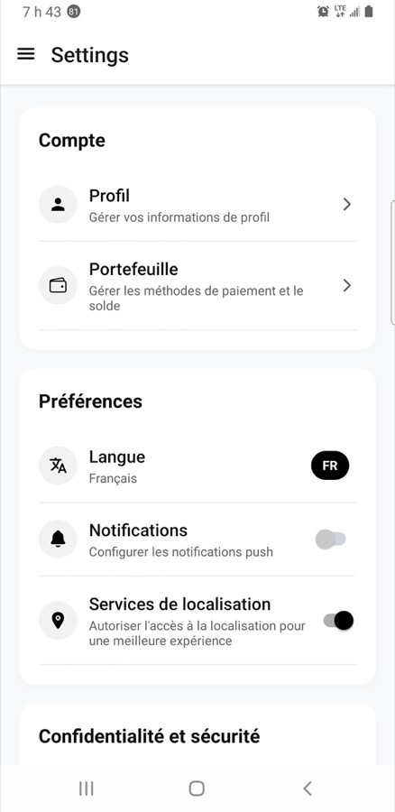
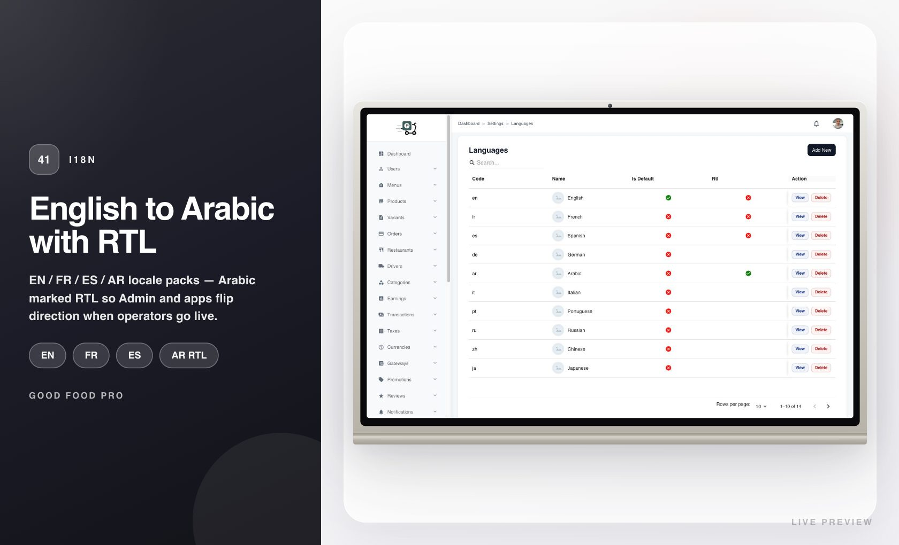
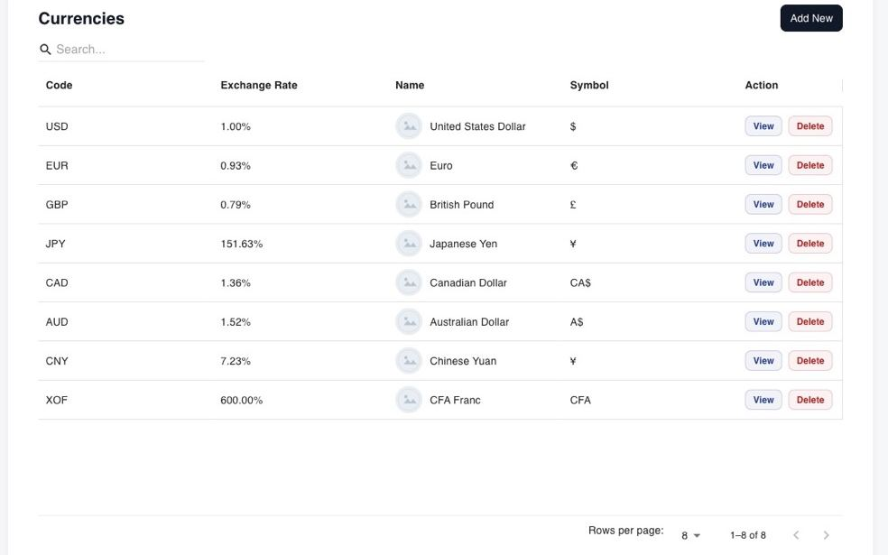
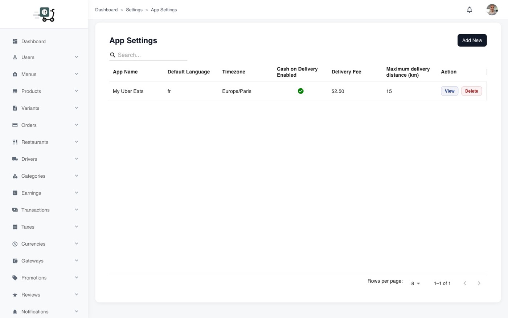

Market & languages
How to make the marketplace feel local: languages (including RTL), currencies, and app-level marketplace settings.
Languages
Admin maintains the language catalogue (code, name, default flag). Mobile apps and the admin UI follow the active / default language. Arabic and similar locales can reverse layout (RTL) when the selected language requires it.
Customers change language from their settings screen; the admin list is where you decide which languages exist and which one is the marketplace default for new users.
Operator steps
- Open Settings → Languages (or Languages in the sidebar, depending on your build).
- Ensure the languages you sell in are present; mark one as default.
- In a customer (or driver / restaurant) app, open Settings and switch language to verify strings and layout.

Language shown in customer settings

Admin language list
Currencies
Menus, carts, wallets, subscriptions, and reports should speak one money language per market. The Currencies list is where you define codes and defaults; changing the active currency without a plan will confuse prices already shown to users, so treat it as a go-live decision.

Admin currencies
Marketplace app settings
App Settings hold cross-cutting marketplace behaviour: default language, timezone, cash-on-delivery, delivery fee defaults, maximum delivery distance, and related flags. Commission baselines and other monetization hooks often live here as well — review this screen when you enter a new city.
Before launch in a city
- Open Settings → App Settings and View the active app record.
- Set timezone, default language, delivery fee / distance, and COD according to local rules.
- Align currency and gateways with that same market.
- Run one full order in that configuration before inviting real restaurants.

Marketplace app settings